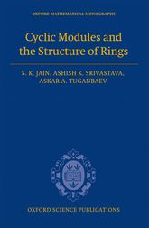
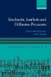
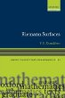
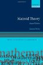
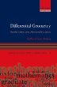
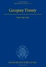
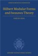
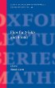

Mathematics Information Resource Centre: New eBooks Addition (12.01.2016)
List of procured eBooks

1. Finite elements and fast iterative solvers: with applications in incompressible fluid dynamics
by Elman, Howard C; Silvester, David J; Wathen, Andrew J.Oxford University Press, 2014
Online access via Consolidated Mathematics Information Resource Catalogue
Acc. No. eMATH128

2. Stochastic analysis and diffusion processes
by Kallianpur, G; Sundar, P. PadmanabhanOxford University Press, 2014ont>
Online Access via Consolidated Mathematics Information Resource Catalogue
Acc. No. eMATH129

3. Matroid theory
by Oxley, J. G.Oxford University Press, 2011
Online Access via Consolidated Mathematics Information Resource Catalogue
Acc. No. eMATH130

4. Riemann surfaces
by Donaldson, S. K.Oxford University Press, 2011
Online Access via Consolidated Mathematics Information Resource Catalogue
Acc. No. eMATH131

5. Differential geometry : bundles, connections, metrics and curvature
by Taubes, Clifford.Oxford University Press, 2011
Online Access via Consolidated Mathematics Information Resource Catalogue
Acc. No. eMATH132

6. Hilbert modular forms and Iwasawa theory
by Hida, Haruzo.Oxford University Pressm 2006
Online Access via Consolidated Mathematics Information Resource Catalogue
Acc. No. eMATH133

7. Category theory
by Awodey, SteveOxford University Press, 2006
Online Access via Consolidated Mathematics Information Resource Catalogue
Acc. No. eMATH134

8. Flips for 3-folds and 4-folds
by Corti, AlessioOxford University Press, 2007
Online Access via Consolidated Mathematics Information Resource Catalogue
Acc. No. eMATH135